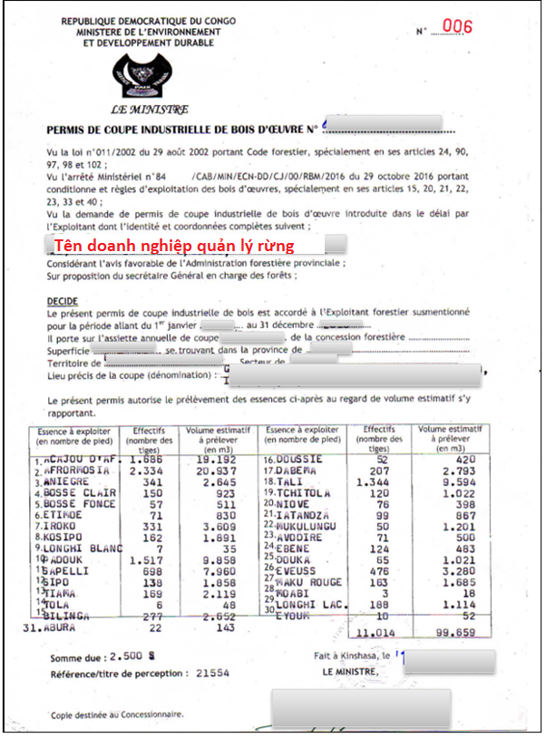
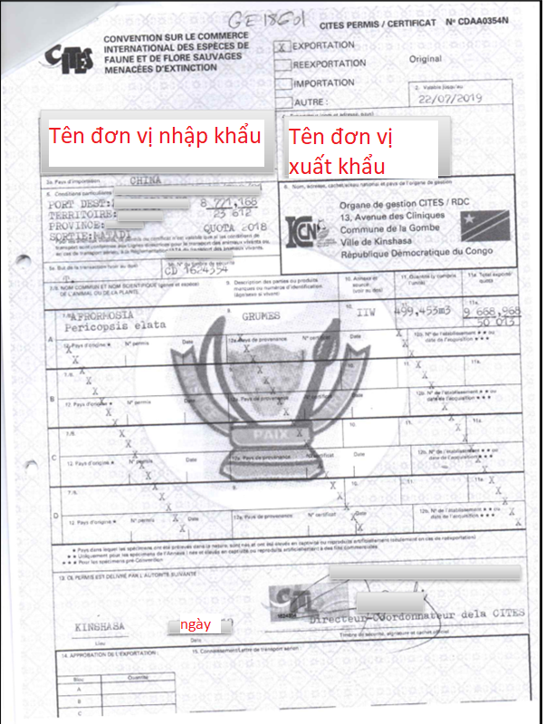
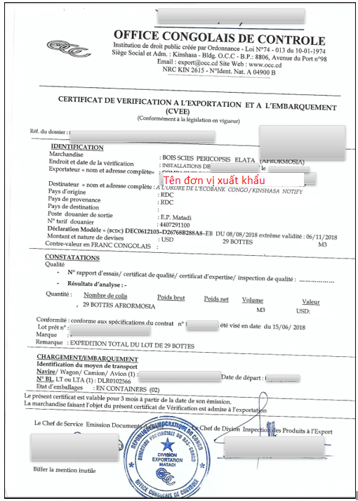
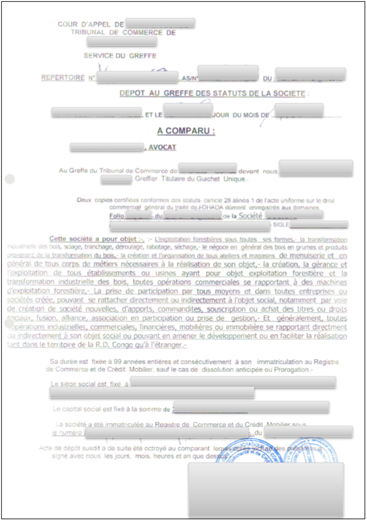
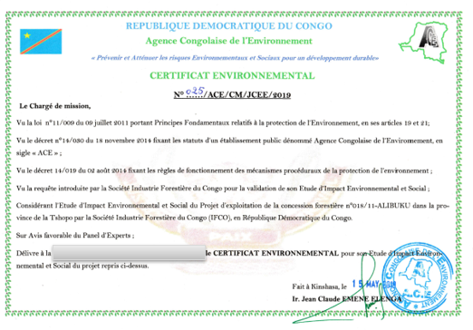

Implementing Timber Leglity Assurance Systems
A guide to comply with timber legality requirements in Cameroon and to support due diligence

DRC
DRC’s Timber legality requirements
The Democratic Republic of Congo is negotiating a Voluntary Partnership Agreement with the European Union. A Timber Legality Assurance System is being developed in this country. It ensures that wood products conform to national laws and helps prevent the illegal importation of timber into other countries. This system depends on the government developing effective control and verification system and operators complying with legal requirements and conducting due diligence. By being aware of the legal requirements in the Democratic Republic of Congo highlighted below, law enforcement agencies and importers can implement control measures to promote the legal timber that is harvested, transported and traded. Importers and verification agencies may refer to or use this definition in implementing due diligence.
Suggestions for developing and implementing due diligence for importers
Due diligence and complexity

Developing due diligence systems
Implementing due diligence
The following documents are selected in accordance with DRC’s legal definition and/or legal requirements in different stages of the supply chain
Forest Concession Contract (Contrat de concession Forestière)

The forest concession contract signed and stamped by the Minister of Environment and Sustainable Development and the representative of the forest concession company with an area of over 300,000 hectares. Check the signatures and seal of the Ministry of Environment and Sustainable Development and the concession company, business name, and validity period on the contract.
Decree on grant of permanent forest concession to a local community (Attribution d’une concession forestière perpétuelle à une communauté locale)
The Decree on grant of permanent forest concession to a local community signed and stamped by the Minister of Environment and Sustainable Development. Check the signature, seal of the Ministry of Environment and Sustainable Development, the size of the concession area on the ministerial decree.
Industrial harvesting license (Permis de coupe industrielle)
The industrial harvesting license applied to the harvesting area is annually signed and stamped by the Minister of Environment and Sustainable Development. Check the signing date, signature, seal of the Minister, name of concession owner, area, volume and species of harvesting.
Provisional Management Plan (Plan de gestion couvrant la période de préparation du Plan d’aménagement)
The provisional management plan is held by the concession holder. Check the concession term less than 4 years,harvesting area on this plan.
Forest inventory planification documents (Documents relatifs à la planification de l’inventaire d’aménagement)
Documents kept by the concession holder, including the Inventory planification for the Management Plan (Plan de sondage de l’inventaire d’aménagement), Notice of validation of the inventory planification (Notification d’acceptation du plan de sondage), Attestation of validation of the inventory planification (Attestation de conformité du plan de sondage de l’inventaire d’aménagement), Report of assessment of the inventory planification (Rapport d’évaluation du plan de sondage de l’inventaire d’aménagement). Check signatures, seal of the Ministry of Environment and Sustainable Development, deadlines on documents.
Socio-economic study (Diagnostic socio-economique)
Socio-economic study applied to industrial forest concessions. Check signatures, seal of concession holder, forestry company on documents.
Approved Management Plan (Plan d’aménagement)
The management plan of the concession holder is approved by a provincial decree. Check the signature and seal of the Minister of Environment and Sustainable Development at the provincial level, the effective time, the area and volume, the number of trees and species harvested on the management plan.
Notice of Acceptance of the five-year management programme (Notification d’acceptation du plan de gestion quinquennal)
Notice of Acceptance of the five-year management programme signed and stamped by the Minister of Environment and Sustainable Development. Check signature, seal of the Minister, validity of date, harvesting area.
Agreement with local communities
The local community agreement is signed and stamped by the representative of the Ministry of Environment and Sustainable Development, the concession holder, and the local community. Check the signatures, seals of the participating parties, the time of signing the agreement before the management and harvseting activities.
Minutes of meetings of the Management and Supervision Committee
The meeting minutes of the Management and Supervision Committee are signed and stamped by representatives of the Ministry of Environment and Sustainable Development, the concession holder, and the local community. Check signatures, seals, time of signing minutes.
CITES Permit
CITES permit is signed, stamped and issued by the Ministry of Environment and Sustainable Development. Check the validity, signature and seal, name of the timber owner, species and volume on the permit.
Notice of tax registration number
Notice of tax registration number signed and stamped by the Director of the Tax Department, Ministry of Finance. Check the tax registration number with the transaction document, sign and stamp the authorized person.
Bank's payment confirmation
The Bank's payment confirmation letter is signed and stamped by the Bank. Check the correct amount on the tax debit note, payment term, signature and seal of the bank.
Export batch report (Rapport de lot prêt à l’exportation)
The export batch report is signed and stamped by the Control Office (Office congolais du contrôle) and issued to the timber exporter. Check signature, seal of Control Office, date of signing, cross-check product type, volume with reality.
Export and lading verification certificate (Certificat de vérification à l’exportation -CVEE)
Export and lading verification certificate signed and stamped by the Control Office, and issued to the timber exporter. Check signature, seal of Control Office, date of signing, cross-check product type, volume with actual export.
Factory licence (Permis d’exploitation usine)
The factory license is signed, stamped and issued by the Minister of Environment and Sustainable Development to timber companies. Check the validity of date, signature, seal of the Minister, location and field of operation.
Legal registration with the Trade Tribunal (Dépôt au greffe du tribunal de commerce des statuts de la société)
Certification documents signed and stamped by the Trade Tribunal for timber companies. Check the validity of date, signature, seal of the Trade Tribunal, cross-check the registration number, purpose and operation with other documents.
Environmental certification (Certificat environnemental)
The environmental certificate is signed by the Director of the Department of Environment and issued to the forestry company. Check the validity period, signature and seal, forest area on the environmental certificate.
Announcement of cooperation with the National Institute of Social Security (l’Institut National de Sécurité Sociale-INSS)
The INSS notice is signed and stamped by the Director of the INSS for timber industry companies. Check the number of workers, signatures, seal of INSS.
Labor contract
The labor contract is drawn up by the company and signed by the employer and the employee. Check that the contract contents, information, signatures and seal are complete and accurate.